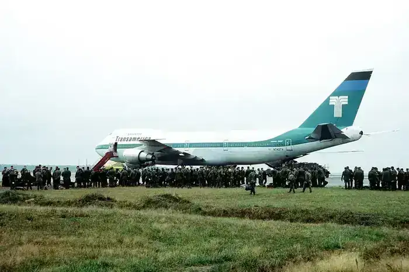

The system
The 737 MAX's larger engines were mounted further forward, which changed the aircraft's pitch behaviour at high angles of attack. Boeing added MCAS — a system that automatically pushed the nose down when it detected a high angle of attack — to make the aircraft handle like earlier 737s, so that pilots would not need simulator training.
Maps, diagrams and images


The failures
MCAS relied on a single angle-of-attack sensor, with no cross-check against the other one, and its authority was increased during development. In October 2018 and March 2019, faulty sensor readings caused MCAS to repeatedly push the nose down; the crews could not overcome it. Lion Air flight 610 and Ethiopian Airlines flight 302 crashed, killing 346 people.
The fleet was grounded worldwide in March 2019 for twenty months. Investigations found design and certification failures, and Boeing paid settlements exceeding $2.5 billion.
Documented: the system, its single-sensor input and its authority.
Documented: the two crashes and the grounding.
Documented: the certification failures.
Contested: the allocation of responsibility between company and regulator.
The label: documented.
Why it is in the archive
Because it is the clearest case of a design decision made for commercial reasons that had a body count, and because the documentation is public.
Open resources on this topic
- PapersOpen-access articles: DOAJ · PubMed Central · Internet Archive Scholar
- BooksPublic-domain and borrowable copies: Open Library · Project Gutenberg · Google Books · Internet Archive
Cite this page
Momin, S. (2026). Boeing's MCAS. The Larger World Archive. https://drsamonline.github.io/LARGE_GLOBE/boeing-mcas.htmlMomin, Sohil. “Boeing's MCAS.” The Larger World Archive, 2026, https://drsamonline.github.io/LARGE_GLOBE/boeing-mcas.html.Momin, Sohil. “Boeing's MCAS.” The Larger World Archive, 2026. https://drsamonline.github.io/LARGE_GLOBE/boeing-mcas.html.@misc{boeings2026boeing,
author = {Momin, Sohil},
title = {Boeing's MCAS},
year = {2026},
howpublished = {The Larger World Archive},
url = {https://drsamonline.github.io/LARGE_GLOBE/boeing-mcas.html},
note = {Last reviewed 20 November 2026}
}Last reviewed 20 November 2026 · Corrections policy · this page is not peer reviewed
Sources for this page
- Wikipedia, “Boeing 737 MAX groundings” — the eventsen.wikipedia.org
- Wikipedia, “Maneuvering Characteristics Augmentation System” — the systemen.wikipedia.org
- Wikipedia, “Lion Air Flight 610” — the first crashen.wikipedia.org
- Wikipedia, “Ethiopian Airlines Flight 302” — the seconden.wikipedia.org